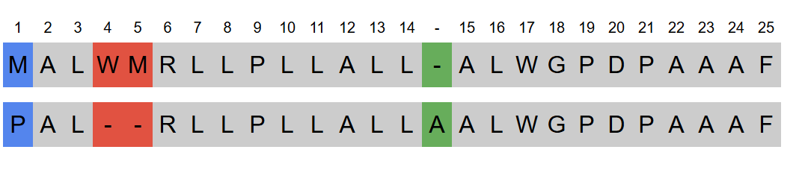

See how it works
Explore The Tools
Protein Analyzer
Analyze your protein sequences, uncover mutations, and explore their links to human diseases.
1. Find the reference sequence of the protein you want to analyse
Protein Analyzer integrates seamlessly with UniProt, a high-quality, freely accessible database of protein sequences. This ensures you get the most reliable, reviewed, and up-to-date reference data for your analysis.
2. Input your sequence
Simply paste or upload your protein sequence and compare it against the reference. Whether you are analyzing experimental data, validating known mutations or exploring novel variations, the intuitive interface allows for quick and accurate sequence submission.
3. View the alignment and identify mutations
Using sequence alignment algorithms, the Protein Analyzer compares your sequence to the reference, highlighting similarities and differences. A side-by-side visualization makes it easy to understand how the mutations are identified. Protein Analyzer automatically identifies amino acid substitutions, deletions, or insertions.
4. Explore their links to human diseases
This tool integrates with ClinVar, a widely used public database which stores information about genetic variations and their association with human diseases. By connecting identified mutations to ClinVar, Protein Analyzer provides insights into whether a variation has been previously studied, its potential clinical significance, and any reported links to genetic disorders or diseases like cancer, and inherited syndromes.
5. Collect research data
Easily export your analysis in multiple formats for further research or documentation. Whether you're conducting a large-scale study or need to share findings with colleagues, the download feature enables you to continue your research seamlessly.
Try the Protein AnalyzerAdvanced Sequence Aligner
Want to learn how sequence comparison works or customize the alignment parameters? The Advanced Sequence Aligner allows you to input two sequences and align them efficiently using the powerful Pairwise Sequence Alignment from the Biopython library. Whether you're working with DNA, RNA, or protein sequences, this tool helps you analyze similarities and differences with precision.
1. Customize the alignment parameters
Modify scoring values, gap penalties, and substitution matrices to tailor the alignment to your needs.
2. View the alignment results
View the aligned sequences in an easy-to-interpret format, making it simple to spot mutations, mismatches, and conserved regions.
3. Understand how alignment works
Modify parameters and observe how the alignment changes, helping you learn the principles behind sequence comparison.
Perfect for researchers, students, and bioinformatics enthusiasts, this tool provides a flexible way to explore sequence relationships with complete control over the alignment process.
Try the Advanced AlignerContact
If you have any questions, suggestions, or feedback, feel free to reach out! I would greatly appreciate any comments that can help improve GenAnalyzer.
You can contact me via email at genanalyzer24@gmail.com or reach out through the GitHub Discussions.
GenAnalyzer is open-source and available on GitHub. Feel free to explore the source code, contribute, or suggest improvements at GitHub - GenAnalyzer.